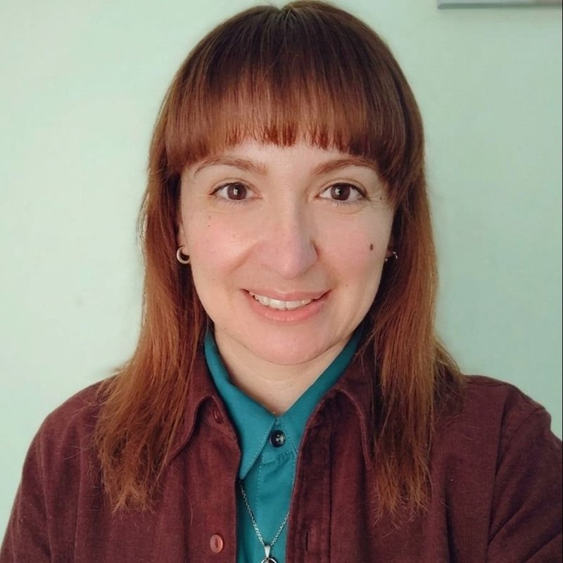

Después de varios meses de proceso, describe haber aprendido a conocerse, a valorarse y a recuperar la confianza en sí misma.
Psicoterapia adulto · Online
Psicóloga clínica · Online y presencial en Viña del Mar
Ps. María José Arias Toro · Psicoterapia para niñxs, adolescentes, adultos y adultos mayores.
Alrededor de catorce años acompañando procesos personales desde una mirada integral, que se adapta a lo que cada persona necesita en el ámbito emocional, socio-familiar y cognitivo-conductual. Atención online y presencial en Viña del Mar.
Modalidades
Atiendo online por videoconsulta y de forma presencial en dos consultas de Viña del Mar, para que la terapia se adapte a tu rutina y no al revés.
Sesiones por videollamada desde cualquier lugar de Chile o del extranjero. Ideal si te acomoda atenderte desde tu casa, viajas seguido o vives fuera de la región.
Atención en box privado en 1 Oriente 252, Viña del Mar, en un espacio pensado para el trabajo clínico infanto juvenil y de adultos. Dirección y mapa en Ubicación ↓.
Segunda consulta presencial en Viña del Mar, en un entorno tranquilo y acogedor. Puedes elegir la que te quede más cómoda al momento de reservar. Ver Ubicación ↓.

Psicóloga · Universidad Andrés Bello
Sobre mí
Soy María José Arias Toro, Psicóloga, con un Magíster en Clínica, mención en Psicodiagnóstico e Intervenciones terapéuticas. Tengo alrededor de catorce años de experiencia en área infanto juvenil. Conjuntamente, he trabajado con población adulta y adulta mayor, observando grandes avances en cada uno de los procesos psicoterapéuticos de mis pacientes.
A lo largo de mi trayectoria profesional me he desempeñado en contexto clínico, educacional, social y en atención primaria de la salud.
Mi proceso formativo se llevó a cabo inicialmente desde la mirada psicoanalítica y durante el transcurso de mi carrera profesional se ha conformado hacia un enfoque de intervención integral, que se adapta a las necesidades de cada consultante, en el ámbito emocional, socio-familiar y cognitivo-conductual.
Me encuentro en formación continua y he realizado cursos en diversas temáticas como por ejemplo en: educación emocional, autoestima, desarrollo de habilidades personales y sociales, orientación parental, ansiedad, depresión, intervención lúdica e intervención asistida con animales.
En la actualidad me desempeño como psicóloga clínica con niñxs, adolescentes y adultos en modalidad online y presencial, acompañando sus procesos personales y abordando diversas temáticas, a través de una mirada unificada y según lo que requiera cada persona en cuanto a su motivo de consulta.
Me especializo en tratar trastornos de ansiedad, cuadros de estrés, trastornos depresivos, baja tolerancia a la frustración, abordaje desde lo emocional de temáticas conductuales asociadas o no al TDAH o TDA, autoestima, autoconocimiento, gestión emocional, duelos, orientación y crecimiento personal, trastornos del sueño, orientación vocacional con adolescentes, desarrollo de habilidades personales y sociales, desarrollo y fortalecimiento de competencias parentales, patrones de apego, dependencia emocional, temáticas con figuras parentales, heridas de infancia, temáticas sociales y laborales, trastornos psicosomáticos y nutrición emocional.
Un gusto, bienvenidx.
Servicios
Evaluación, psicodiagnóstico y psicoterapia a lo largo de todo el ciclo vital, con una mirada integral que se ajusta al motivo de consulta de cada persona.
Acompañamiento a niñas y niños a través de la intervención lúdica: el juego como vía para expresar, ordenar y elaborar lo que todavía no alcanzan a poner en palabras.
Un espacio propio para hablar de identidad, ansiedad, autoestima, relaciones, presión académica y decisiones importantes, con la confianza y la privacidad que la adolescencia necesita.
Procesos individuales para trabajar ansiedad, estrés, ánimo, duelos, dependencia emocional, heridas de infancia, temáticas laborales y crecimiento personal.
Evaluación psicológica infanto juvenil y de adultos mediante entrevistas, pruebas psicométricas y técnicas proyectivas gráficas, con informe escrito y sesión de devolución de resultados.
Acompañamiento a madres, padres y cuidadores para comprender lo que ocurre en casa, fortalecer el vínculo y desarrollar herramientas concretas de crianza y manejo conductual.
Proceso con adolescentes para explorar intereses, habilidades y expectativas, y tomar decisiones vocacionales con más claridad y menos angustia.
Respiración guiada, relajación y técnicas de regulación emocional para acompañar cuadros de ansiedad, crisis de pánico, estrés y trastornos del sueño.
Talleres de desarrollo personal, educación emocional y habilidades sociales, además de intervención asistida con animales como recurso terapéutico complementario.
Especialidades
Trabajo con niñxs, adolescentes, adultos y adultos mayores en un amplio rango de temáticas emocionales, conductuales y vinculares. Esta lista es solo una referencia: si tu motivo de consulta no aparece aquí, igual puedes escribirme para conversarlo.
¿Tienes dudas sobre si trabajo con tu caso? Escríbeme o revisa las preguntas frecuentes.
Cómo trabajo
Cada proceso es distinto, pero estos cuatro momentos se repiten en casi todos. Saber qué esperar suele bajar bastante la ansiedad de la primera sesión.
Reservas tu hora en Doctoralia o me escribes por WhatsApp contándome brevemente qué te trae a consulta y si prefieres atención online o presencial.
Conversamos con calma sobre tu motivo de consulta, tu historia y lo que esperas del proceso. En el caso de niñxs, la primera entrevista es con las figuras parentales.
Definimos objetivos en conjunto y elegimos las herramientas que mejor se ajusten a ti: emocionales, socio-familiares o cognitivo-conductuales, y psicodiagnóstico si se requiere.
Avanzamos sesión a sesión, revisando los cambios. Cuando los objetivos se cumplen, el espaciado de las sesiones y el cierre también se trabajan, sin cortes bruscos.
Opiniones
Personas que han hecho terapia conmigo han compartido su experiencia en Doctoralia. Estos son algunos de los temas que más se repiten en sus opiniones.
Después de varios meses de proceso, describe haber aprendido a conocerse, a valorarse y a recuperar la confianza en sí misma.
Psicoterapia adulto · Online
Destaca un trato cercano y respetuoso, que genera un espacio de confianza y hace que las sesiones se sientan amenas.
Psicoterapia individual · Presencial
Menciona un ambiente tranquilo y contenedor, con paciencia y preocupación real por el bienestar de quien consulta.
Consulta online · Proceso personal
Resumen de opiniones publicadas en Doctoralia. Reemplázalas por testimonios textuales si cuentas con la autorización de esas personas.
Hay 21 opiniones verificadas de pacientes en mi perfil de Doctoralia, con citas confirmadas por la plataforma.
Ver opiniones en Doctoralia →Ubicación
Atiendo por videoconsulta desde cualquier lugar y de forma presencial en dos centros de Viña del Mar. Puedes elegir el que te quede más cómodo al reservar tu hora.
1 Oriente 252, Viña del Mar · Atención presencial para niñxs desde 4 años, adolescentes y adultos.
Cómo llegar →Viña del Mar · Segunda consulta presencial, en un entorno tranquilo y acogedor.
Cómo llegar →Videollamada desde tu casa, oficina o donde estés. Recibes el enlace de conexión antes de la sesión.
Valores y previsión
Los valores dependen del tipo de atención y de la modalidad. Si tienes dudas sobre cuál corresponde a tu caso, escríbeme antes de reservar y lo vemos juntxs.
Psicoterapia · Online
Sesión por videollamada de aproximadamente 50 minutos, para adolescentes y adultos que prefieren atenderse desde su casa.
Evaluación
Aplicación e interpretación de técnicas proyectivas gráficas dentro de un proceso de psicodiagnóstico, con entrega de resultados.
Grupal
Talleres de educación emocional, autoestima y habilidades personales y sociales, en formato individual o para grupos pequeños.
Psicoterapia · Presencial
Sesión de psicoterapia individual, infantil o de adolescentes en Centro Alt Potencial o Centro Casona Poniente.
Previsión y formas de pago: se emite boleta reembolsable en Isapres y se acepta Fonasa según la modalidad y el lugar de atención. El pago se realiza por transferencia bancaria y, en atención presencial, también en efectivo. La cobertura de cada previsión varía, así que conviene revisarla antes de la primera sesión.
Preguntas frecuentes
Algunas dudas que suelen aparecer antes de empezar un proceso. Si tienes otra, escríbeme por Contacto.
No es necesario. Puedes agendar directamente una primera sesión conmigo. Si durante el proceso se requiere el apoyo de un psiquiatra o de otro especialista, te lo indico y lo coordinamos en conjunto.
En atención presencial trabajo con niñxs desde los 4 años y en modalidad online desde los 6 años, además de adolescentes, adultos y adultos mayores.
Se emite boleta reembolsable en Isapres y se acepta Fonasa según la modalidad y el lugar de atención. Como la cobertura varía en cada previsión, te recomiendo consultarla antes de la primera sesión.
Cada sesión dura aproximadamente 50 minutos. La primera está destinada a conocer tu motivo de consulta, tu historia y a definir juntxs un plan de trabajo.
Al inicio suelen ser semanales y, a medida que aparecen avances, se van espaciando a cada quince días o de forma mensual. La frecuencia siempre se conversa y se ajusta a cada proceso.
Mi formación inicial fue psicoanalítica y con los años se ha ido conformando hacia un enfoque de intervención integral: uso herramientas emocionales, socio-familiares y cognitivo-conductuales según lo que requiera cada persona.
Un celular, tablet o computador con cámara y micrófono, buena conexión a internet y, muy importante, un espacio privado y tranquilo donde puedas conversar sin interrupciones.
Sí. Todo lo que se conversa está protegido por el secreto profesional. En procesos con niñas, niños y adolescentes comparto con las figuras parentales las orientaciones necesarias, resguardando siempre la intimidad del espacio terapéutico.
Sí. Realizo psicodiagnóstico infanto juvenil y de adultos con entrevistas, pruebas psicométricas y técnicas proyectivas gráficas, con informe escrito y una sesión de devolución de los resultados.
Sí. La orientación parental es parte del proceso: se agendan entrevistas periódicas con madres, padres o cuidadores para revisar avances y entregar herramientas concretas para la casa.
Sí, avisando con la mayor anticipación posible por WhatsApp o desde Doctoralia, para poder liberar el horario y coordinar una nueva sesión.
Directamente desde mi perfil de Doctoralia, eligiendo día y hora disponible, o escribiéndome por WhatsApp para coordinar.
En la sección Opiniones ↑ de esta página y, con más detalle, en las opiniones verificadas de mi perfil de Doctoralia.
Contacto
Si necesitas más información antes de reservar tu hora, puedes escribirme directamente y te respondo apenas pueda.